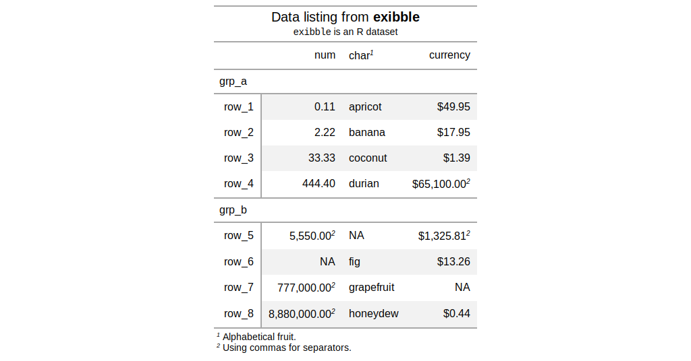
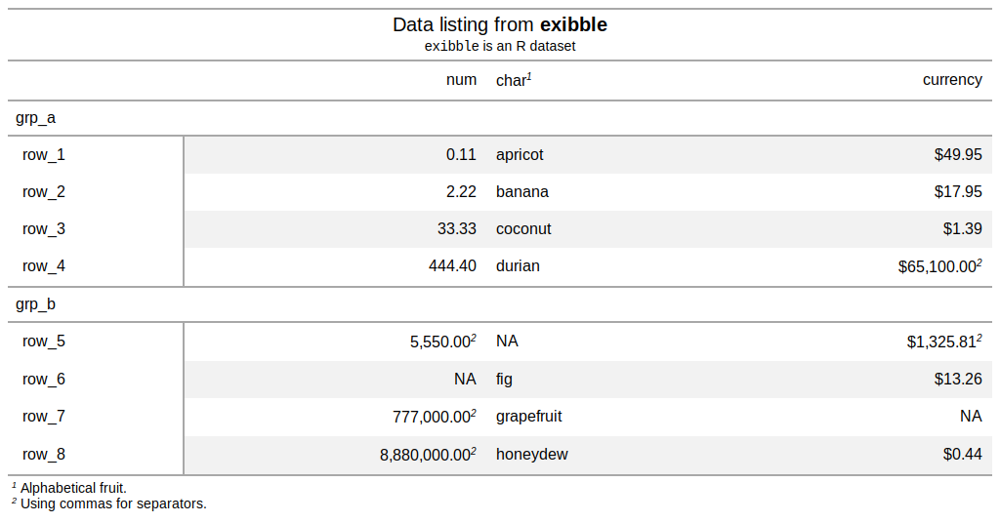
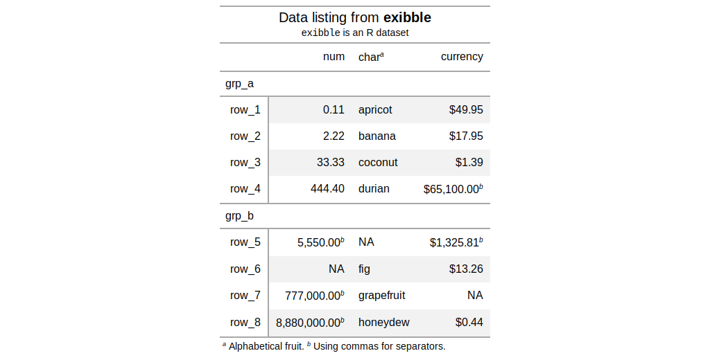
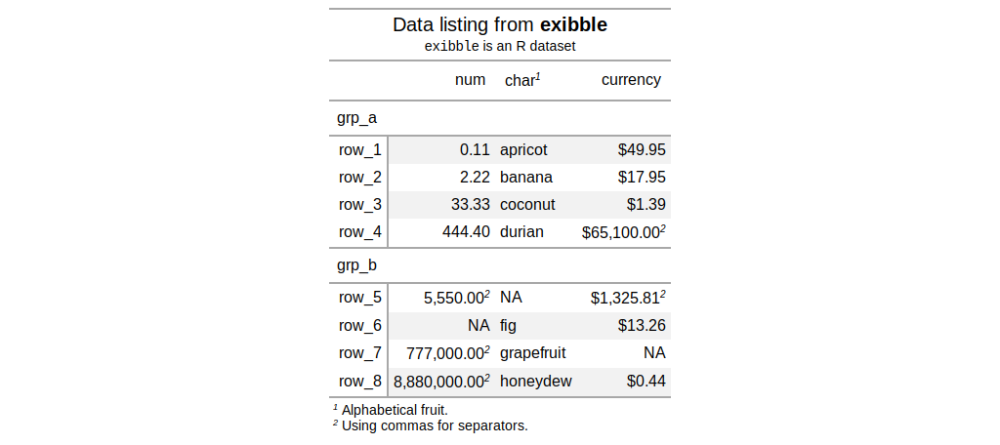

Modify the options available in a table. These options are named by the components, the subcomponents, and the element that can adjusted.
tab_options(data, table.width = NULL, table.font.size = NULL, table.background.color = NULL, table.border.top.style = NULL, table.border.top.width = NULL, table.border.top.color = NULL, heading.background.color = NULL, heading.title.font.size = NULL, heading.subtitle.font.size = NULL, heading.border.bottom.style = NULL, heading.border.bottom.width = NULL, heading.border.bottom.color = NULL, column_labels.background.color = NULL, column_labels.font.size = NULL, column_labels.font.weight = NULL, stub_group.background.color = NULL, stub_group.font.size = NULL, stub_group.font.weight = NULL, stub_group.border.top.style = NULL, stub_group.border.top.width = NULL, stub_group.border.top.color = NULL, stub_group.border.bottom.style = NULL, stub_group.border.bottom.width = NULL, stub_group.border.bottom.color = NULL, field.border.top.style = NULL, field.border.top.width = NULL, field.border.top.color = NULL, field.border.bottom.style = NULL, field.border.bottom.width = NULL, field.border.bottom.color = NULL, row.padding = NULL, summary_row.background.color = NULL, summary_row.padding = NULL, summary_row.text_transform = NULL, footnote.sep = NULL, footnote.glyph = NULL, footnote.font.size = NULL, footnote.padding = NULL, sourcenote.font.size = NULL, sourcenote.padding = NULL, row.striping.include_stub = NULL, row.striping.include_field = NULL)
Arguments
| data | a table object that is created using the |
|---|---|
| table.width | the width of the table. Can be specified as a
single-length character with units of pixels or as a percentage. If
provided as a single-length numeric vector, it is assumed that the value is
given in units of pixels. The |
| table.font.size, heading.title.font.size, heading.subtitle.font.size, column_labels.font.size, stub_group.font.size, footnote.font.size, sourcenote.font.size | font sizes for the parent text element |
| table.background.color, heading.background.color, column_labels.background.color, stub_group.background.color, summary_row.background.color | background colors for the parent element |
| table.border.top.style, table.border.top.width, table.border.top.color | the style, width, and color of the table's top border. |
| heading.border.bottom.style, heading.border.bottom.width, heading.border.bottom.color | the style, width, and color of the heading's bottom border. |
| column_labels.font.weight, stub_group.font.weight | the font weight of the
|
| stub_group.border.top.style, stub_group.border.top.width, stub_group.border.top.color | the style, width, and color of the stub heading's top border. |
| stub_group.border.bottom.style, stub_group.border.bottom.width, stub_group.border.bottom.color | the style, width, and color of the stub heading's bottom border. |
| field.border.top.style, field.border.top.width, field.border.top.color | the style, width, and color of the field's top border. |
| field.border.bottom.style, field.border.bottom.width, field.border.bottom.color | the style, width, and color of the field's bottom border. |
| row.padding, summary_row.padding | the amount of padding in each row and in each summary row. |
| summary_row.text_transform | an option to apply text transformations to the label text in each summary row. |
| footnote.sep | the separating characters between adjacent footnotes in the footnotes section. The default value produces a linebreak. |
| footnote.glyph | the set of sequential figures or characters used to
identify the footnotes. We can either supply the keyword |
| footnote.padding, sourcenote.padding | the amount of padding to apply to the footnote and source note sections. |
| row.striping.include_stub | an option for whether to include the stub when striping rows. |
| row.striping.include_field | an option for whether to include the field when striping rows. |
Value
an object of class gt_tbl.
Figures






See also
Other table-part creation/modification functions: gt_preview,
gt, tab_footnote,
tab_header, tab_row_group,
tab_source_note, tab_spanner,
tab_stubhead_label, tab_style
Examples
# Use `exibble` to create a gt table with # all the main parts added; we can use this # going forward to demo some `tab_options()` tab_1 <- exibble %>% dplyr::select( -c(fctr, date, time, datetime) ) %>% gt( rowname_col = "row", groupname_col = "group" ) %>% tab_header( title = md("Data listing from **exibble**"), subtitle = md("`exibble` is an R dataset") ) %>% fmt_number(columns = vars(num)) %>% fmt_currency(columns = vars(currency)) %>% tab_footnote( footnote = "Using commas for separators.", locations = cells_data( columns = vars(num), rows = num > 1000) ) %>% tab_footnote( footnote = "Using commas for separators.", locations = cells_data( columns = vars(currency), rows = currency > 1000) ) %>% tab_footnote( footnote = "Alphabetical fruit.", locations = cells_column_labels( columns = vars(char)) ) # Modify the table width to 100% (which # spans the entire content width area) tab_2 <- tab_1 %>% tab_options( table.width = pct(100) ) # Modify the table's background color # to be "lightcyan" tab_3 <- tab_1 %>% tab_options( table.background.color = "lightcyan" ) # Use letters as the glyphs for footnote # references; also, separate footnotes in # the footer by spaces instead of newlines tab_4 <- tab_1 %>% tab_options( footnote.sep = " ", footnote.glyph = letters ) # Change the padding of data rows to 5px tab_5 <- tab_1 %>% tab_options( row.padding = px(5) ) # Reduce the size of the title and the # subtitle text tab_6 <- tab_1 %>% tab_options( heading.title.font.size = "small", heading.subtitle.font.size = "small" )